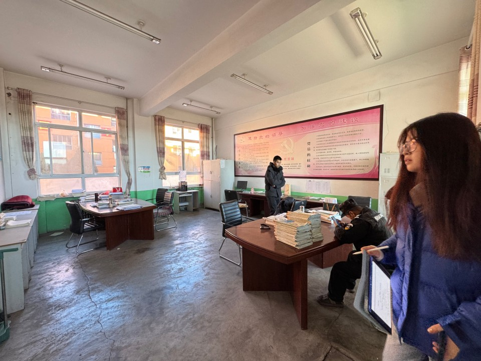
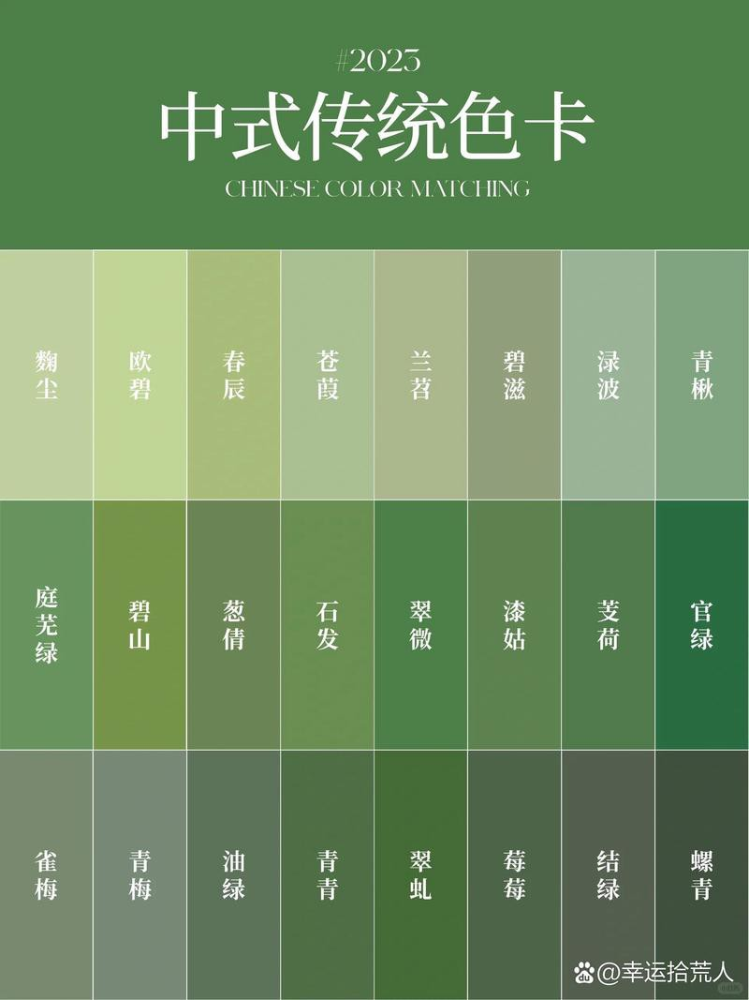
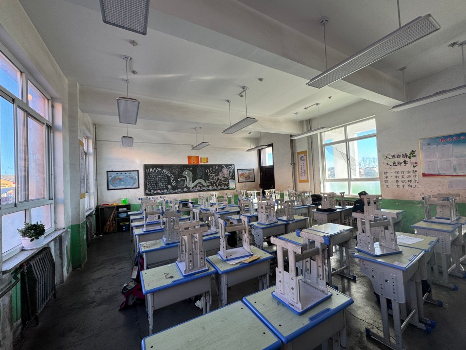
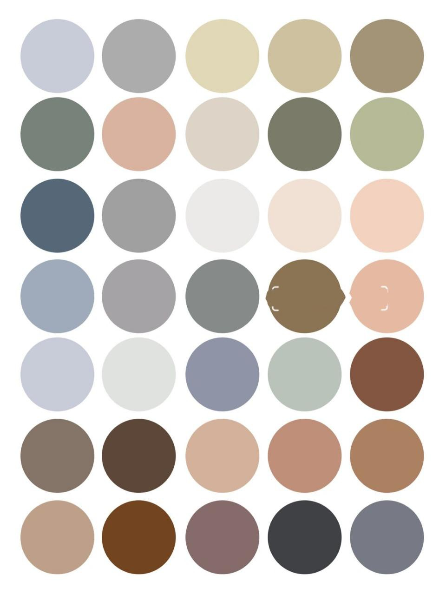
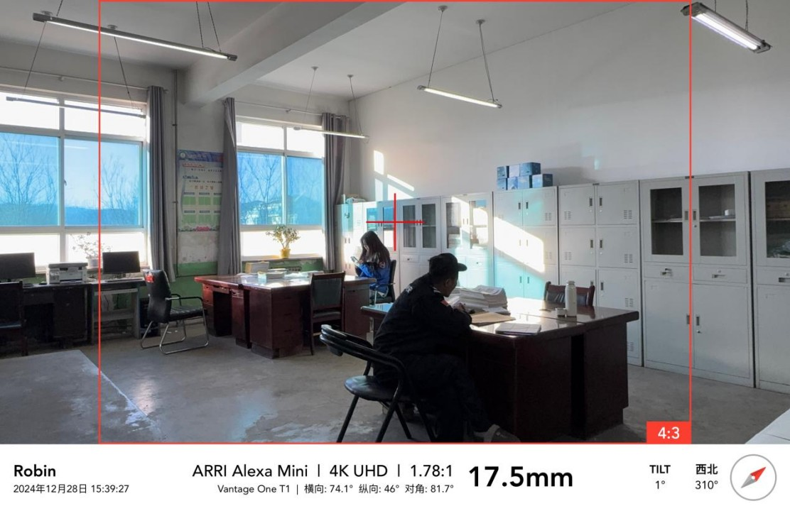
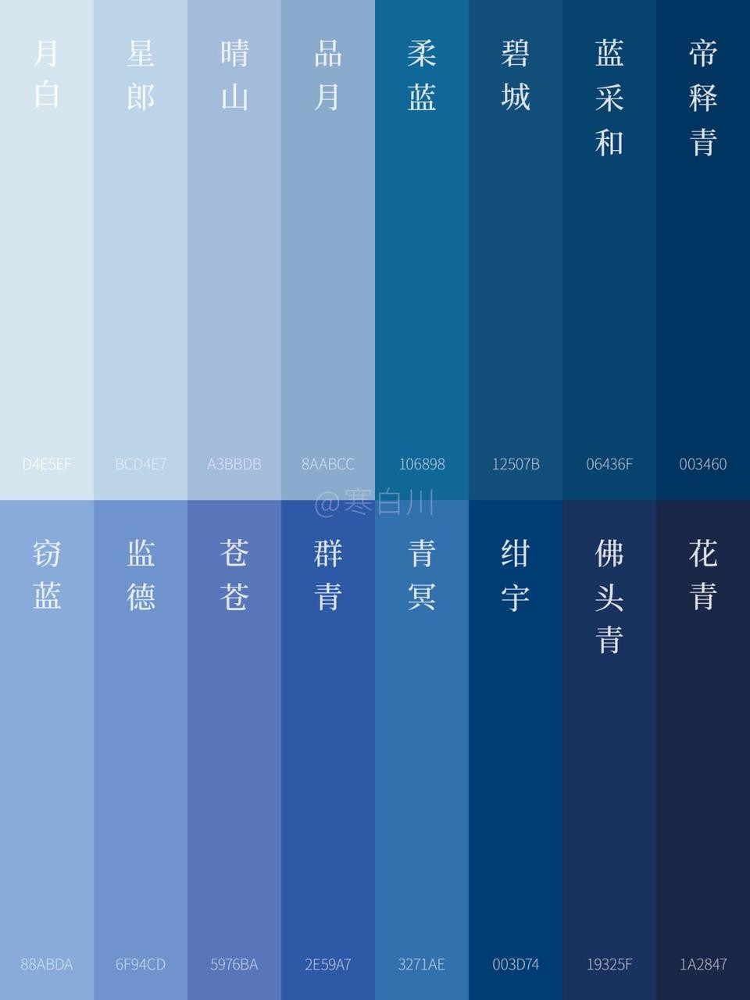

Leaving It to the Future 留给未来
A retiring schoolteacher in a small northern county town, the week before New Year.
Designing around what I could not change
These are the palettes I set for each scene, and why each one was chosen.


Teachers' Office
A restrained, green-based palette balances the strong natural light from the corridor while softening the teacher's otherwise stern presence. The space remains grounded in a realistic, familiar environment.


Classroom
A realistic classroom setting is paired with a muted, Morandi-inspired palette. Deep red school uniforms are balanced with softer tones to create a cohesive and understated visual environment.


Academic Affairs Office
A predominantly blue palette reflects the subdued emotional tone surrounding Mr. Li's impending retirement, reinforcing a sense of melancholy and emotional restraint within the realistic setting.
Turning a palette into instructions
This is the part of the job I care most about. Every location photograph went to the dressing team marked up with numbered notes: what to remove, what to reposition, which surface to repaint and to which RAL reference. They could work straight off the image without me in the room.
The art department budget was around RMB 10,000 including location fees; five of us built it. The design was locked before dressing started, and we finished on schedule.
What I did not get right
I did not achieve full period accuracy in the props. The bulk items, books above all, would have blown the budget if sourced or aged properly, and the hours it would have taken were not worth what the camera would have seen. I made that trade deliberately, but it is the thing I would fix with more money.
Back to desktop